Ортодонтія · журнал «ДентАрт» 2013 №1 (70)
Застосування аналізатора HIP-площини у стоматології
THE USING OF HIP PLANE ANALYZER IN DENTISTRY
Пристрій і протокол роботи з аналізатором HIP-площини
Ось уже понад сто років ми користуємося двома основними площинами для орієнтації: франкфуртською і камперовською. Франкфуртську площину зазвичай використовують ортодонти при РЦМ-аналізі телерентгенограм, ортопеди ж згадують про неї лише при накладанні лицьової дуги (більшість лицьових дуг орієнтована саме на цю площину). Камперовська площина в ортопедичній стоматології використовується набагато частіше, оскільки вона розташовується близько до оклюзійної площини і паралельна їй (чи майже паралельна), що дозволяє візуально оцінити положення оклюзійної площини зубного ряду верхньої щелепи. Проте цей метод досить суб'єктивний і неточний, оскільки камперовська площина визначається по шкірних точках, які неточні, і візуальне визначення паралельності (без будь-яких вимірів) дуже проблематичне.
У 1955 році Куперман і Віллард провели дослідження понад 10 000 черепів і встановили, що HIP-площина є стабільною площиною, яка не зазнає вікових змін і паралельна оклюзійній площині.4 Використовуючи спеціальний столик, ми можемо фіксувати модель верхньої щелепи в артикуляторі без лицьової дуги і провести аналіз положення зубного ряду верхньої щелепи у відповідності з теорією ортокраніальної оклюзії. Для цього лікар повинен отримати відбиток зубного ряду верхньої щелепи з крилощелепними виїмками (фото 1), які мають бути відображені на гіпсовій моделі щелепи (фото 2). Потім зубний технік встановлює модель верхньої щелепи на спеціальний столик у відповідності з точками HIP-площини і фіксує її до верхньої рами артикулятора (фото 3). Ця методика проста у застосуванні, проте не завжди вдається прозняти крилощелепні виїмки на всю їхню глибину: при широко відкритому роті крилощелепні складки напружуються і можуть згладжувати контури згаданих виїмок, що призведе до зміни положення моделі верхньої щелепи.
Розроблений аналізатор HIP-площини (апарат Шестопалова) реалізує ідею візуалізації цієї площини в ротовій порожнині пацієнта. Він складається з внутрішньоротової частини, виконаної у вигляді підковоподібної пластини, і ручки (фото 4). Дистальні відділи підковоподібної пластини зігнуті під прямим кутом у бік верхньої щелепи. У проксимальній частині пластина має подовжній паз, розташований по середньосагітальній лінії, в якому вертикально зафіксований штифт з можливістю переміщення уздовж паза. Висота штифта дорівнює висоті дистальної частини пластини. У ручці є отвір, в якому фіксується знімний вертикальний стержень-індикатор. Конструкція пристрою захищена патентом №107049 від 10.08.2011 р.
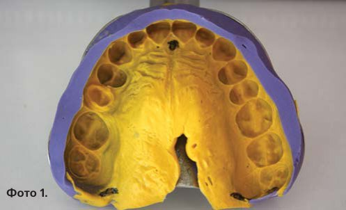
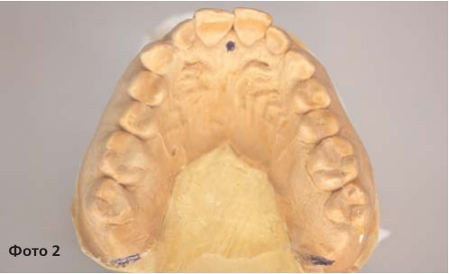
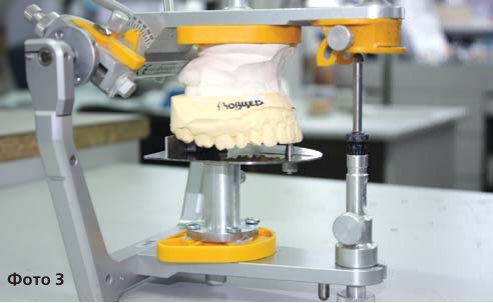
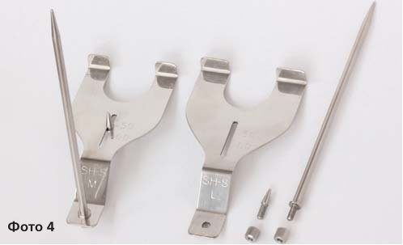
При роботі з аналізатором HIP-площини (HIP-analyzer) необхідно дотримуватися такого протоколу.
Вибираємо прилад необхідного розміру (відстань між зовнішніми краями вертикальних вигинів М=60 або L=70 мм) і встановлюємо його в ротовій порожнині пацієнта так, щоб вертикальні частини підковоподібної пластини торкнулися крилощелепних виїмок (фото 5). Наступний крок — встановлюємо вертикальний штифт на різцевий сосочок. Для цього заздалегідь злегка послаблюємо гайку, яка фіксує штифт, потім переміщуємо його в подовжньому пазу і фіксуємо в необхідному положенні гайкою (фото 6). При легкому тиску знизу вгору пристрій надійно утримується в ротовій порожнині пацієнта паралельно HIP-площині (фото 7). Підковоподібна пластина пристрою розташовується дещо нижче зубного ряду верхньої щелепи, що дозволяє провести аналіз положення оклюзійної площини верхнього зубного ряду (фото 8). Слід пам'ятати, що опорними точками в ротовій порожнині є дистальні частини аналізатора, а штифт на різцевому сосочку — лише точка дотику, інакше пацієнт зазнаватиме болючих відчуттів. Вертикальний стержень-індикатор, що встановлюється в отворі ручки, у нормі співпадає із серединно-сагітальною лінією лиця пацієнта і служить додатковим орієнтиром правильності положення пристрою (мал. 9).
На вертикальному стержні-індикаторі ми можемо фіксувати додаткові насадки (фото 10) для верифікації положення аналізатора щодо камперовської площини (фото 11) і лінії зіниць (фото 12).
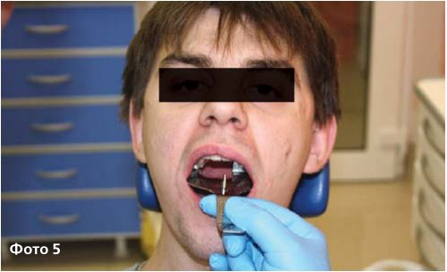
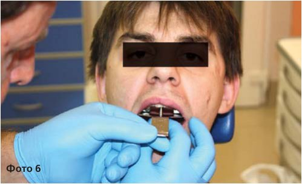
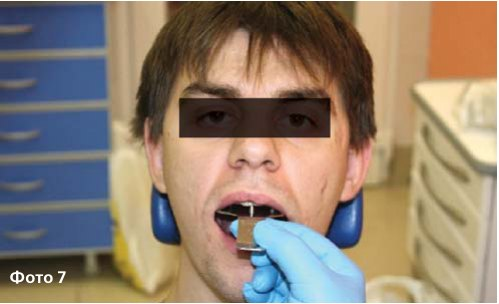
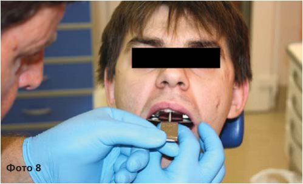
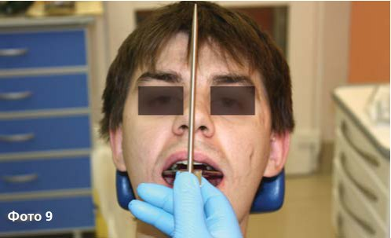
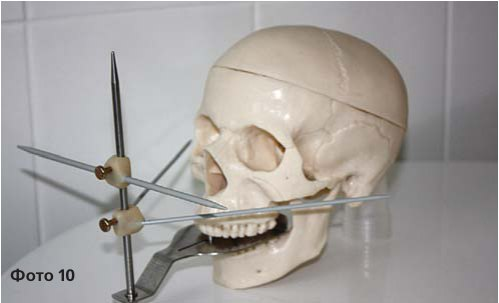
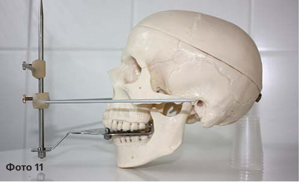
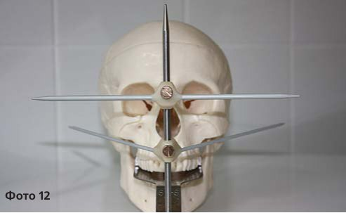
Діагностика: клінічна оцінка положення зубного ряду верхньої щелепи щодо HIP-площини і положення усього верхньощелепного комплексу
Діагностика положення оклюзійної площини верхнього зубного ряду, як правило, не викликає складнощів, оскільки аналізатор добре фіксується і дозволяє лікареві разом з пацієнтом провести огляд ситуації в порожнині рота (фото 13). Надалі ми зможемо провести детальніше вивчення положення зубного ряду верхньої щелепи щодо HIP-площини на моделі щелепи в артикуляторі (але про це дещо пізніше).
Необхідно зазначити, що наявність вертикального стержня-індикатора дозволяє у перше ж відвідування провести диференціальну діагностику між гнатичним (скелетним) і зубо-альвеолярним типом деформації зубного ряду верхньої щелепи. Якщо індикатор співпадає із серединно-сагітальною лінією обличчя (на 12 годин), то положення верхньої щелепи щодо основи черепа можна вважати симетричним, що відповідає нормі (фото 14); якщо ж не співпадає — маємо гнатичний тип деформації верхнього зубного ряду і всього верхньощелепного комплексу (фото 15). Оскільки ж аналізатор спирається в порожнині рота на крилоподібні відростки клиновидної кістки (а не на кісткові структури верхньої щелепи), ми сміливо можемо говорити про елементи інструментальної остеопатичної діагностики положення згаданої клиновидної кістки і (побічно) про патерни руху в сфено-базилярному синхондрозі (СБС).
Використання додаткових насадок дозволяє оцінити положення верхньої щелепи щодо камперовської площини (фото 16) і орбітальної лінії (фото 17), а це, безперечно, підвищує діагностичну цінність аналізатора HIP-площини.
Таким чином, лікар відразу, у перше відвідування, отримує інформацію про положення верхнього зубного ряду і всього верхньощелепного комплексу і може обговорити з пацієнтом клінічну ситуацію не лише з позиції естетики, але й функції.
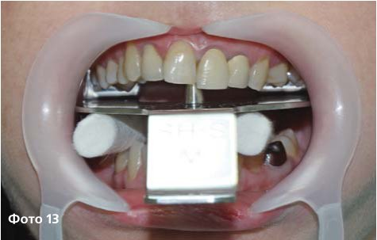
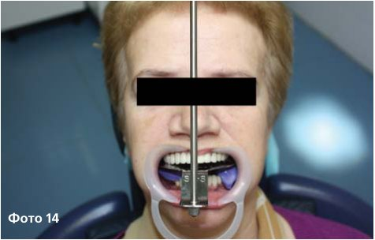
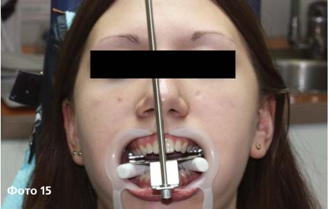
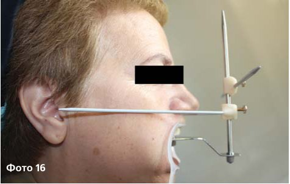
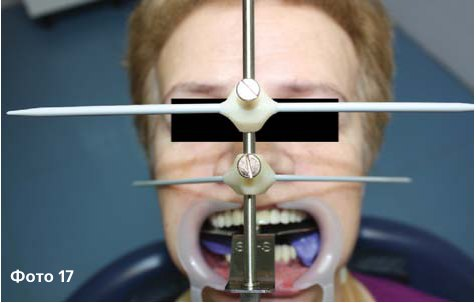
Частина 1. Продовження читайте в «ДентАрті» №2/2014.
Литература
- Bill Dickerson, Norman Thomas. Точне перенесення положення верхньої щелепи в артикулятор по сагітальній і горизонтальній площинах. Dental Market, №5, 2009, P. 68-71.
- Carlson J.E. Physiologic occlusion. Midwest Press, 2009. 218 p.
- Cooperman H. N., Willard S. B. Studies of the Louchheim Collection of Sculls. New York: Am. Museum of Natural History, 1960.
- Cooperman H. N. The HIP-Plane of Occlusion in Oral Diagnosis. Dental Survey Nov. 1975, P. 60-62.
- Ramfjord S., Ash M: Occlusion. 3rd Edition, WE Saunders Co. 1983.